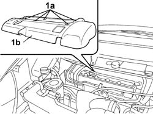
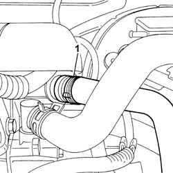
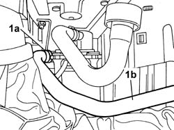

1080B26 SUPPLY PIPE FROM ELECTRIC PUMP TO EXHAUST AIR INJECTION SYSTEM CUT OFF VALVE - R.R.
- Path
- Procedures > 10 ENGINE > 1080 EXHAUST EMISSION CONTROL SYSTEM > 1080B EXHAUST EMISSION CONTROL SYSTEM > 1080B26 SUPPLY PIPE FROM ELECTRIC PUMP TO EXHAUST AIR INJECTION SYSTEM CUT OFF VALVE - R.R.
- Kind
- repair procedure (removal / refitting; the operation number is the code)
- Applies to
- engines: 2.0 16v; all production periods
- Interactive page
- https://sloeber94.github.io/elrnDB-fUlss/en/#/179007102
Applies to: engines: 2.0 16v; all production periods
 Removing
Removing
 Refitting
Refitting- Position the vehicle on the lift.
See in Op. 5010B18 Climate control unit AIR INTAKE - R.R.
See in Op. 1048A10
See in Op. 7055B54 PROTECTIVE SHIELD UNDER ENGINE - R.R.
1. Rotate the fastening pins (1a) through 90° and remove the coil cover (1b).

Applies to: engines: 2.0 16v; all production periods
1. Disconnect the rapid connector and release the hose from the plastic fastening.

Applies to: engines: 2.0 16v; all production periods
See in Op. 4450B02 Left FRONT WHEEL (one) - R.R.
See in Op. 7055B90 Left FRONT WHEEL ARCH LINER - R.R.
1. Act on the fastening band (1a) and remove the supply pipe from the electric pump to the exhaust air injection system cut out valve (1b).

Applies to: engines: 2.0 16v; all production periods
Refitting
Removing- Fit the supply pipe from the electric pump to the exhaust air injection system cut out valve and renew the fastening on the pump.
See in Op. 7055B90 Left FRONT WHEEL ARCH LINER - R.R.
See in Op. 4450B02 Left FRONT WHEEL (one) - R.R.
- Connect the rapid connector to the cut out valve.
- Fit the coil cover and renew the fastenings.
See in Op. 7055B54 PROTECTIVE SHIELD UNDER ENGINE - R.R.
See in Op. 1048A10
See in Op. 5010B18 Climate control unit AIR INTAKE - R.R.
- Remove the vehicle from the lift.